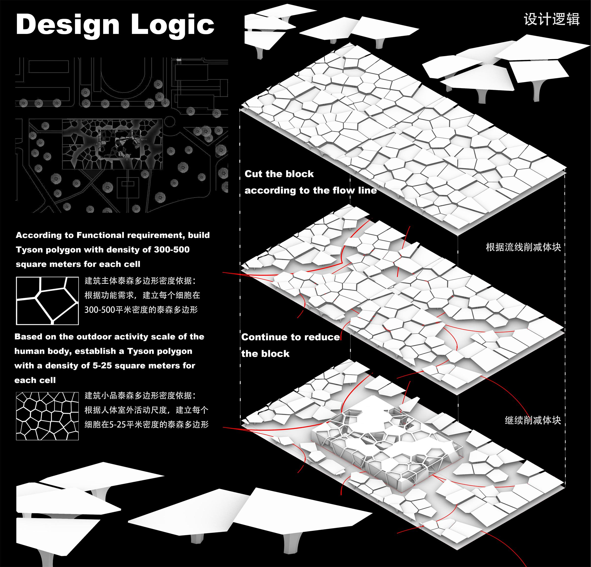
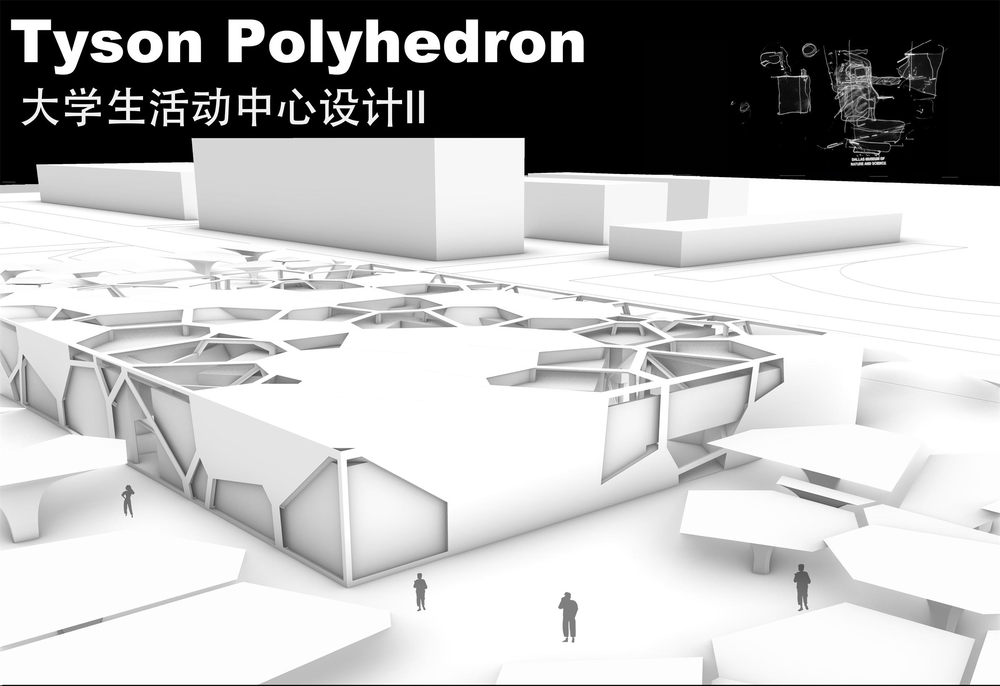
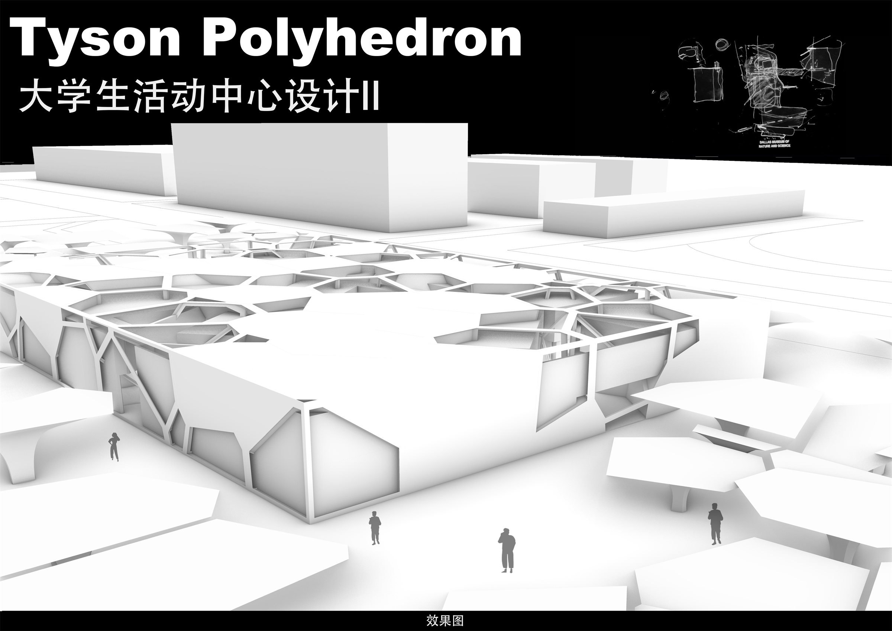

PROJECT NO. 02 · FIG. 2
大学生活动中心设计STUDENT ACTIVITY CENTRE
设计说明 DESIGN STATEMENT
活动中心的生成逻辑取自泰森多边形：建筑主体按功能需求，建立每个细胞在 300–500 ㎡ 密度的泰森多边形；建筑小品则依据人体室外活动尺度，以每个细胞约 5–25 ㎡ 的密度生成。在此基础上沿流线逐步削减体块，使多边形的秩序与校园活动的路径相互塑造。
The centre is generated from Tyson (Voronoi) polygons: cells of the main volume are sized by function at 300–500 m² each, while outdoor pieces follow the scale of human activity at about 5–25 m² per cell. The mass is then cut back along flow lines, so that polygonal order and campus movement shape one another.
主效果图 MAIN RENDERING
由泰森多边形细胞生成的建筑主体在校园中展开，通透的界面让各类活动可见、可达。

体块生成 MASSING
体块生成分两步：先根据流线削减体块，再继续削减，直至形成与场地和活动路径呼应的最终体量。
The mass is generated in two steps: cut the block according to the flow line, then keep cutting until the final volume answers the site and its paths of activity.


设计逻辑 DESIGN LOGIC

泰森多边形的密度依据：建筑主体根据功能需求，建立每个细胞在 300–500 ㎡ 密度的泰森多边形；建筑小品则根据人体室外活动尺度，建立每个细胞在 5–25 ㎡ 密度的泰森多边形。
Density rules of the Tyson polygon: for the main volume, cells are sized by function at 300–500 m²; for outdoor pieces, cells follow the scale of human outdoor activity at 5–25 m².
效果图 RENDERING
面向校园的开敞姿态：大台阶与架空通道把学生引入建筑，室内外活动彼此渗透。
An open gesture towards the campus: wide steps and the elevated passage draw students in, letting indoor and outdoor life interpenetrate.


二层平面与剖面 SECOND FLOOR & SECTION

二层平面（1:200）与 1-1 剖面（1:200）：共享大厅与社团用房沿多边形边界布置，东西立面随体块起伏。
Second floor plan (1:200) and section 1-1 (1:200): shared halls and society rooms sit along the polygonal edges, and east–west elevations rise and fall with the mass.
效果图 RENDERING
从校园一侧望去，起伏的多边形屋顶轮廓成为新的校园天际线。
Seen from the campus, the undulating polygonal roofline becomes a new skyline for the school.


一层平面与立面 GROUND FLOOR & ELEVATIONS

一层平面（1:200）与南北立面（1:200）：入口广场、架空通道与各功能细胞组织在统一的多边形网格之中。
Ground floor plan (1:200) with south and north elevations (1:200): the entry plaza, elevated passage and functional cells are organised in one polygonal grid.